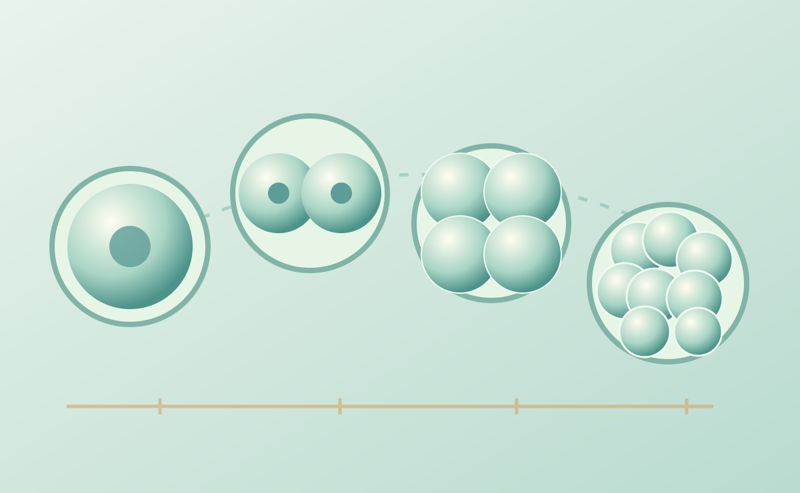

01 / 03
01 / 03
MOLECULAR EMBRYOLOGY
The polar body as a molecular window
A small by-product of meiosis may carry informative traces of the oocyte. What can we learn from it, and where are the limits of interpretation?
Read the storyI study how molecular signals and developmental timing shape the earliest stages of mammalian life. My work brings together polar body biology, time-lapse imaging, and embryo phenotyping, alongside an interest in the ethical questions raised by reproductive technologies.
Three connected lines of inquiry—from molecular traces to developmental timing and the ethics of reproductive choices.
01 / 03
A small by-product of meiosis may carry informative traces of the oocyte. What can we learn from it, and where are the limits of interpretation?
Read the story
02 / 03Embryos develop through a sequence of transitions. Can the timing of those transitions be interpreted alongside molecular and cellular phenotypes?
Read the story 03 / 03
03 / 03
New technologies generate more information about embryos. What makes that information meaningful, fair, and appropriate for clinical use?
Read the storyEvery early embryo has a history. The challenge is to understand what we can—and cannot—learn from its traces.
Academic journey ↗From the molecular contents of polar bodies to the timing of embryonic cleavage, my research explores how different lines of evidence can illuminate developmental competence—while recognizing the limits of inference and clinical translation.
Verified research papers, perspectives, and scholarly outputs.
A place for scientific essays, critical analysis, and reflection on the social context of research.
Testing, evidence, patient autonomy, and the societal implications of assisted reproduction.
Ideas and discoveries that illuminate the first days of mammalian development.
How research methods, institutions, and scientific culture shape what we know.
Scientific conversations and interdisciplinary exchanges are welcome.